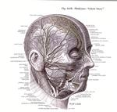

Home Artist links Label link

Phideaux - Ghost Story
| Artist: | Phideaux |
| Title: | Ghost Story |
| Label: | Bloodfish ZYZ-1618 |
| Length(s): | 51 minutes |
| Year(s) of release: | 2004 |
| Month of review: | [12/2006] |
Line up
Sam Fenster - bass
Rich Hutchins - drums, gongs
Mark Sherkus - keyboards, guitars
Phideaux Xavier - vocals, guitars
Tracks
| 1) | Everynight | 5.14
|
| 2) | Feel The Radiation | 4.02
|
| 3) | A Curse Of Miracles | 6.25
|
| 4) | Kiteman | 4.30
|
| 5) | Wily Creilly | 5.24
|
| 6) | Beyond The Shadow Of Doubt | 7.45
|
| 7) | Ghostforest | 5.45
|
| 8) | Universally | 5.45
|
| 9) | Come Out Tonight | 5.52
|
Summary
The music
Even though the opener of the album has a bit of a wavey, gothic feel this album soon shows its true face: being pretty much pop rock, with minor progressive touches. Only a couple of tracks are a bit longer, creating the time for some more development, most notably so in Beyond The Shadow Of Doubt. The extra development seriously enhances the progressive content, easily making this into the album's best track from a progressive standpoint. Ghostforest and Universally have a nice build up too, although drums and vocals fail to make the sort of impression the composition seems to suggest.
Unfortunately the majority of tracks on this disc does not manage to move beyond a somewhat too flat poprock idiom. Sure, there are the nice jingles and jangles at times, but those are drowned out in a poor rhythmic section (most notably so the drums), vocals that are straight and lack modulation or body. Kiteman is probably the best example, sounding very uninspired and a bit too fast paced.
Conclusion
Phideaux reminds me a bit of an artist like Corey Hart: every once in a while a good song, a song that has something new or extra on offer, comes out. But the large majority of material is just normal and professional, not bad, but not good either. Mostly bland. This is why the rise in quality towards the end of the album can not hide that it falls short. It leaves one (or at least me) indifferent. The result can be played in the background without offending, but also without pushing itself to the foreground.
© Roberto Lambooy